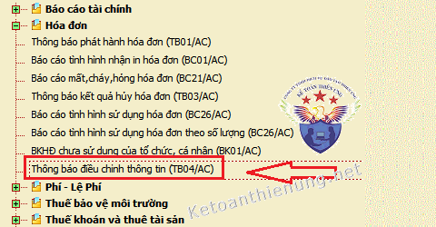
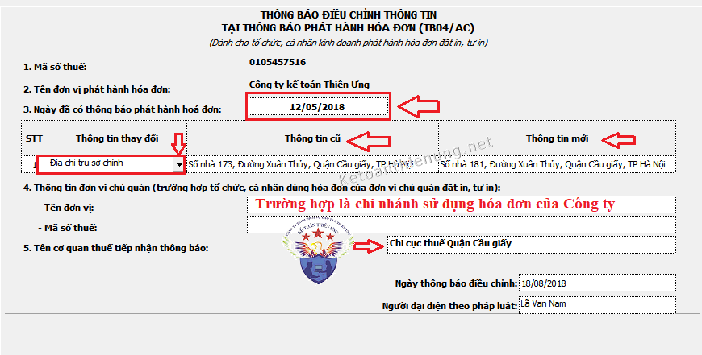
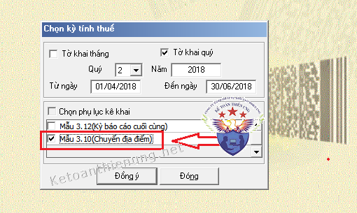

Khi chuyển địa điểm kinh doanh hoặc thay đổi tên công ty, mã số thuế thì những hóa đơn GTGT đã in trước đó có được sử dụng hay không? Công ty kế toán Diệu Tâm xin hướng dẫn cách xử lý những hóa đơn khi thay đổi tên công ty, mã số thuế, chuyên địa điểm…
|
Lưu ý với bạn đọc:
Bạn đang xem bài viết hướng dẫn cách viết HÓA ĐƠN GIẤY
=> Hiện nay, doanh nghiệp đã chuyển sang sử dụng HÓA ĐƠN ĐIỆN TỬ rồi nên Xử lý hóa đơn khi thay đổi địa chỉ, tên công ty sẽ được thực hiện theo quy định tại nghị định 123/2020/NĐ-CP và thông tư 78/2021/TT-BTC
Chi tiết các bạn xem tại đây:
|
Chú ý: Sau khi DN các bạn đã làm việc xong với bên Sở kế hoạch đầu tư (Nhận được giấy phép kinh mới hoặc thông báo xong ...), Nếu các bạn muốn tiếp tục sử dụng những hóa đơn đã đặt in trước đó thì làm các thủ tục như sau nhé:
-----------------------------------------------------------------
1. Nếu thay đổi tên, địa chỉ nhưng không thay đổi mã số thuế và cơ quan thuế:- Đối với các số hóa đơn đã thực hiện thông báo phát hành nhưng chưa sử dụng hết có in sẵn tên, địa chỉ trên từ hóa đơn, khi có sự thay đổi tên, địa chỉ nhưng không thay đổi mã số thuế và cơ quan thuế quản lý trực tiếp, nếu tổ chức kinh doanh vẫn có nhu cầu sử dụng hóa đơn đã đặt in thì thực hiện các thủ tục sau:
- Đóng dấu tên, địa chỉ mới vào bên cạnh tiêu thức tên, địa chỉ đã in sẵn
- Gửi Thông báo điều chỉnh thông tin hóa đơn theo Thông tư 39 lên cơ quan thuế.
- Được sử dụng ngay hóa đơn.
(Theo Khoản 1 Mục IV Công văn 2010/TCT-TVQT, sửa đổi, hướng dẫn thông tư 39)
-> Mẫu Thông báo điều chỉnh thông báo phát hành hoá đơn, các bạn có thể làm trên phần mềm HTKK rồi nộp qua mạng nhé.


-> Sau khi làm xong các bạn kết xuất XML rồi nộp qua mạng.
- Tiếp đó, phải đợi xem cơ quan thuế đã nhận được chưa (Liên hệ với Chi cục thuế, xem có phải nộp bản cứng nữa không)
-------------------------------------------------------------------------------------
a) Nếu muốn tiếp tục sử dụng, các bạn cần làm:
- Nộp báo cáo tình hình sử dụng hóa đơn (+) Bảng kê hóa đơn chưa sử dụng BK01/AC Bảng kê hóa đơn chưa sử dụng BK01/AC (Mẫu 3.10 theo Thông tư 39).
-> Nộp cho cơ quan thuế nơi chuyển đi.

Các bạn có thể làm trên phần mềm HTKK rồi kết xuất XML để nộp qua mạng như trên
Chú ý:
-> Khi mở phần mềm HTKK lên Chọn Báo cáo tình hình sử dụng hóa đon -> Chọn kỳ làm Báo cáo các bạn phải chọn đến ngày hiện tại.
Ví dụ: Ngày 9/5/2019 (tức là Qúy 2), là ngày các bạn làm Báo cáo tình hình sử dụng hóa đơn để chuyển đi.
- Thì "Kỳ báo cáo" các bạn chọn Qúy 2
-> "Từ ngày" thì mặc định là ngày 1/4/2019 rồi -> Nhưng "Đến ngày" Thì các bạn phải gõ vào ngày hiện tại "Tức là ngày 9/5/2019"
----------------------------------------------------------------------------------------
-> Tiếp đó: Đóng dấu địa chỉ mới lên hoá đơn.- Nộp Thông báo điều chỉnh thông tin hóa đơn + Bảng kê hóa đơn chưa sử dụng BKAC/01 (Mẫu 3.10 theo Thông tư 39) -> Nộp cho cơ quan thuế nơi chuyển đến và được sử dụng ngay hóa đơn.
Mẫu thông báo điều chỉnh thông tin hóa đơn, các bạn làm như trên phần 1
Mẫu bảng kê hóa đơn chưa sử dụng BK01/AC, các bạn lấy theo số liệu đã nộp cho cơ quan thuế nơi chuyển đi
Mẫu bảng kê hóa đơn chưa sử dụng BK01/AC, các bạn lấy theo số liệu đã nộp cho cơ quan thuế nơi chuyển đi
------------------------------------------------------------------
b) Nếu không có nhu cầu sử dụng:
- Thì DN phải thực hiện hủy các số hóa đơn chưa sử dụng và thông báo kết quả hủy hóa đơn với cơ quan thuế nơi chuyển đi và thực hiện thông báo phát hành hóa đơn mới với cơ quan thuế nơi chuyển đến.
(Theo Khoản 1 Mục IV Công văn 2010/TCT-TVQT, sửa đổi, hướng dẫn thông tư 39)
Xem thêm: Thủ tục hủy hóa đơn theo thông tư 39
----------------------------------------------------------------------------------------
Kế toán Diệu Tâm xin chúc các bạn thành công!
-----------------------------------------------------------------------------------------
Kế toán Diệu Tâm xin chúc các bạn thành công!
-----------------------------------------------------------------------------------------